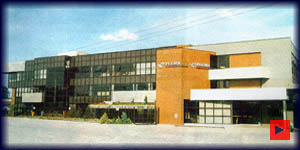

|

|
PLUMA CONFORTO E TURISMO S.A.
Ano de Fundação: 1966
Área: Transp. de passag. rodoviários, cargas e encomendas.
Atuação Nac: 6 Estados (MG, PR, RJ, RS, SC, SP).
Atuação Internacional: Argentina, Chile e Paraguai.
Faturamento no ano de 1996: R$ 56.000.000,00
Frota Total: 540 Veículos (Ônibus, caminhões e veículos pequenos).
Funcionários no ano de 1996: 1.600
Quilômetros percorridos: 55.350.000
|
|